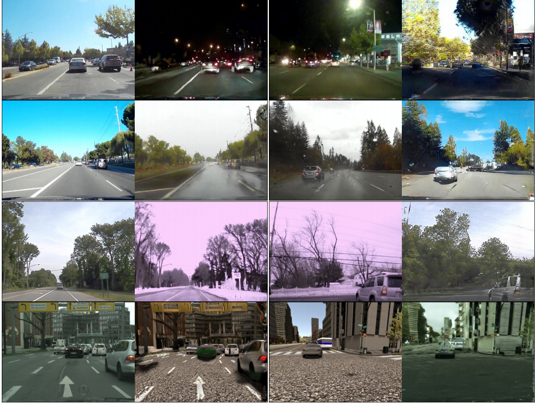

A Little Review of Domain Adaptation in 2017
This post was first published as a quora answer to the question What are the most significant machine learning advances in 2017?
2017 has been an amazing year for domain adaptation: awesome image-to-image and language-to-language translations have been produced, adversarial methods for DA have made huge progress and very innovative algorithm have been proposed to tackle the giant problem of adapting two domains.
By domain adaptation, I mean any algorithm trying to transfer two domains, usually called source and target (for instance paintings and real photos), into a common domain. To do so, one can chose either to translate one domain into the other (e.g. translate paintings to photos) or to find a common embedding between the two domains. When only the source domain has labels and the goal is to predict the labels of the target domain, it’s called unsupervised domain adaptation and that’s where the advances were the most incredible. There are many benchmarks to evaluate a DA algorithm, one of the most common being to predict the labels of SVHN (a dataset of digits built with house numbers) by using MNIST (the most common handwritten digits dataset) and its labels. In a year, the results have passed from 90% (with Domain Transfer Network (DTN)[1], which was already a great improvement on previous methods that turned around 82%, like DRCN[2]) to 99.2% (with self-ensembling DA[3]). Besides this quantitative analysis, the translations performed by some algorithms released this year are qualitatively amazing, particularly in visual DA and NLP.

Figure 1. Transfer of SVHN to MNIST by SBADA-GAN[4], May 2017. For testing a DA algorithm, one can try to predict the labels of SVHN by only using the labels of MNIST and the unsupervised translation between SVHN and MNIST.
Let’s try to summarize how awesome this year has been for domain adaptation.
Adversarial Domain Adaptation
If 2015 saw the birth of adversarial domain adaptation (with DANN[5]) and 2016 the birth of GAN-based domain adaptation (with CoGAN[6] and DTN[2:1] ), 2017 has seen huge improvements and amazing results with these methods. The idea behind adversarial DA is to train two neural networks: a discriminator that tries to separate the target domain from the transformed source domain, and a generator that tries to fool the discriminator to make the source domain look like the target one as much as possible. It’s basically a GAN but taking the source distribution as input instead of a uniform distribution (it is usually called a conditional GAN). I’ve realized a little animation to explain the concept more visually (you can find the code here):

Figure 2. GAN-based adversarial domain adaptation for two Gaussian domains. The discriminator (background) tries to separate the green distribution from the orange distribution, and the generator modifies the green distribution to fool the discriminator. You can find the code here.
So, what were the “significant advances” in 2017?
ADDA
First, in February, ADDA[7] released a generalized theoretical framework for adversarial domain adaptation and achieved a 76.0% score with a simple GAN loss on SVHN → MNIST (which they thought to be the best score for an adversarial network on this task, but they had probably not heard of DTN at the time they submitted their article).
CycleGAN
A month later, the most important contribution of adversarial DA occurred: the invention of the cycle-consistency loss by CycleGAN[8]. This paper was a real revolution. Their idea was to train two conditional GANs, one transferring source to target, and the other target to source, and to consider a new loss, called cycle-consistency, which ensures that if you connect the two networks together it will produce an identity mapping (source → target → source). Their examples of transferring horses to zebra or painting to photos have become really famous and I consider it to be one of the coolest thing of this year! Contrary to other methods like pix2pix[9], they didn’t train their algorithm on pairs of images (like a photo of cat and the sketch of this same cat, for pix2pix), but only on the two distributions separated, which makes their results even more impressive.

Figure 3. Examples of image-to-image translations with CycleGAN
DiscoGAN
What’s fun is that a bunch of other papers discovered the cycle-consistency loss simultaneously, between March and May, sometimes giving it another name (like reconstruction loss). It’s for instance the case of DiscoGAN[10], whose loss was a bit different (cross-entropy for the GAN loss instead of MSE for instance) but they also achieved incredible results, by managing to transfer both texture properties (like transforming blonde-haired to brown-haired people, women to men or people with glasses to people without glasses) and geometrical properties (chairs to cars and faces to cars).


Figure 4. Examples of image-to-image translations with DiscoGAN
DualGAN
It’s also the case of DualGAN[11], who used the cycle loss with a WGAN and other recent tricks on how to train GANs. They applied it on day ←→ night or sketch ←→ photos translations, and here are the results:

Figure 5. Examples of image-to-image translations with DualGAN
SBADA-GAN
But those 3 papers didn’t consider any dataset with a task (like classification), so didn’t give any quantitative evaluation of their method. SBADA-GAN[4:1] did it by adding a classifier at the end of their network in order to predict the labels of both the source and the transformed target sample. During the training, pseudo-labels are assigned to the target samples and contribute to the classification loss. The score obtained for SVHN → MNIST is not very good (~76%, same as ADDA), but they achieved new state-of-the-arts on the opposite transformation (MNIST→SVHN) and on MNIST ←→ USPS (another handwritten-digits dataset very close to MNIST).
GenToAdapt
Other kind of adversarial architectures have been tried this year with more success on digits benchmarks, like GenToAdapt[12] in April who made the first real state-of-the-art of the year in SVHN → MNIST, with a score of 92.4%. Their technique was basically to use a GAN to generate source images from both source and target samples, and to discriminate both real vs fake samples and the different classes of the source samples (like AC-GAN). The learned embedding is then used to train a third network, C, to directly predict the labels of the input samples. The figure below (from the original paper) is certainly clearer than my explanation:

Figure 6. The architecture of GenToAdapt
UNIT
It’s also the case of UNIT[13], an adversarial method proposed by Nvidia. Like in many Nvidia papers, they performed a large bunch of amazing experiments (image-to-image translation between different outside conditions on the road, between GTA and reality, between different breeds of dogs, etc.). They have also tested their algorithm on SVHN → MNIST, and obtained 90.53%, which is very close to DTN score, but they manage to transfer much higher-resolution images. Their technique is based on CoGAN[6:1], which consists in two GANs, one for generating the source domain and one for the target domain, with weight-sharing for some layers. Nvidia’s main contribution was to replace the generator by a VAE. They indeed show that the VAE loss is equivalent to the cycle-consistency constraint described in the previous papers.

Figure 7. Examples of image-to-image translations with UNIT
StarGAN
However, those architectures are only capable of transferring one source domain to one target domain at a time. But if you have multiple domains, there should be a way to train a network to perform transfers in all the domains. In November StarGAN[14] adapted CycleGAN to this so-called multi-source domain adaptation problem. Their results in transferring different hair colors or emotions for the same person were pretty amazing as you can see:

Figure 8. Example of multi-domain image translations with StarGAN
Word Translation Without Parallel Data
It might seem from the examples above that the DA community is putting all its efforts into computer vision (CV). But one of the most impressive (and shared) DA paper of the year is in natural language processing (NLP) : Word Translation Without Parallel Data[15]. They basically used adversarial DA to find a common embedding between samples from two languages (source and target), and managed to perform very accurate translations without having trained on any example of translation! If you read the paper, you can notice that the expression “domain adaptation” haven’t been used once… Since most DA folks are into computer vision, it seems that the NLP guys who wrote this paper were not aware that their work entered into domain adaptation. So I think NLP would benefit a great deal by testing on their data all the brand new DA methods that the CV community has invented this year.

Figure 9. Alignement of the embedding word spaces of the source (english) and the target (italian) domains.
Pix2Pix HD
Finally, I have talked only about unpaired domain adaptation (where you don’t use any pair of corresponding source/target samples during the training), but paired DA has also known a little revolution with pix2pixHD[16]. It’s basically an improved version of pix2pix (a conditional GAN trained on pairs of images) with many tricks to make it scalable to bigger images. They trained their network to transform semantic maps into realistic photos of street scenes, as you can see on the animation below:

Figure 10. Translation of a semantic map (map of labels) to a real street scene with pix2pixHD
Embedding methods
Apart from adversarial DA, many other methods have been tried this year, some of them being very successful. That’s the case of two recent methods which try to find a common embedding between the source and target domains, leading at the end to a single neural network capable of classifying both source and target samples.
Associative DA
The first one is Associative DA (\( DA_{assoc} \))[17] who achieved a score of 97.6% on SVHN→MNIST. In order to find the best embedding, they used the new trend of 2017… cycle-consistency loss! Yes, again, but this time without any GAN or other adversarial network: they just try to learn an embedding (last layer of a neural network) such that the probability of translating a source sample to a target sample (based on the distance between the two points in the embedding space), then converting back this target sample to another source sample will be high if the two source samples belong to the same class.
Self-Ensembling DA
The second one is Self-Ensembling DA[3:1], who really destroyed our benchmark SVHN→MNIST with a score of 99.2% ! We’ll have to find other benchmarks next year! They did this exploit by adapting Mean Teacher − a method coming from semi-supervised learning that has achieved recent SOTA in this field − to domain adaptation. The idea is to have two networks, a student and a teacher, and to make the weights of the teacher a moving average of all the weights that the student got during training. Then, labeled source samples are used to train the student to be a good classifier, and unlabeled target samples to train the student to be like the teacher (with a consistency loss). You can find a more visual explanation here.
Optimal Transport
Another kind of method has been developed this year: domain adaptation based on optimal transport. Optimal transport is a huge area of applied mathematics, consisting in finding the best transport plan from one distribution to another, by minimizing the total cost of transporting a source mass to a target point. For instance, if you consider two sets of points (with the same number of points each), source and target, and take as the cost function simply the euclidean distance, optimal transport asks you to associate every source point to a target points, so that the total distance is minimized. Here is the solution for two Gaussian domains:

Figure 11. Best transport plan between two Gaussian domains. Each source point is transported to a target point, and the total distance is minimized. This graph has been produced with the library POT.
This blog article is an excellent introduction if you want to learn more about OT.
If you start to understand a bit domain adaptation, I think you can now clearly see the link between OT and DA. The relation between those two fields had been theorized in 2016[18], but a very interesting algorithm has come out in 2017: Joint Distribution Optimal Transportation (JDOT)[19]. Their method is an iterative process: at each iteration, pseudo-labels are given to every target points (at first using a classifier trained on the source samples). Then, the goal is to transport every source point to a target point, minimizing not only the total distance traveled, but also the number of change of label during the transport (between the label of the source point and the pseudo-label of the target point). I made a visual explanation here : A Visual Explanation of JDOT Algorithm, summarized in this GIF (not sure if understandable without pausing at each step):

Figure 12. Animation showing the different steps of the JDOT algorithm. You can find all those images separated and associated to some explanations here
Conclusion
To sum it up, not only has 2017 destroyed some domain adaptation benchmarks, it has also produced the first high-quality translations from one domain to another (as you can see in all those pictures above). But we can still do much better on many more complicated benchmarks and adapt DA to other areas of machine learning (like reinforcement learning and NLP), so 2018 has all its chances to be as awesome as 2017, and I look forward to see what it gives!
If you want to learn more about domain adaptation, I’m maintaining an updated list of great resources (papers, datasets, results, etc.) about DA and transfer learning on this GitHub repository.
Disclaimer: the description of those papers only corresponds to my current understanding of them, so take it with a grain of salt and don’t hesitate to tell me if I am incorrect or imprecise in some of my explanations. Concerning the results I give, they are only the ones given in the original papers and a more rigorous methodology should be used in order to make a real comparison.
References
Deep Reconstruction-Classification Networks for Unsupervised Domain Adaptation (2016) ↩︎ ↩︎
From source to target and back: symmetric bi-directional adaptive GAN (2017) ↩︎ ↩︎
Unpaired Image-to-Image Translation using Cycle-Consistent Adversarial Networks (2017) ↩︎
Image-to-Image Translation with Conditional Adversarial Networks (2016) ↩︎
Learning to Discover Cross-Domain Relations with Generative Adversarial Networks (2017) ↩︎
DualGAN: Unsupervised Dual Learning for Image-to-Image Translation (2017) ↩︎
Generate To Adapt: Aligning Domains using Generative Adversarial Networks (2017) ↩︎
StarGAN: Unified Generative Adversarial Networks for Multi-Domain Image-to-Image Translation (2017) ↩︎
High-Resolution Image Synthesis and Semantic Manipulation with Conditional GANs ↩︎
Associative Domain Adaptation (2017) ↩︎
Theoretical Analysis of Domain Adaptation with Optimal Transport (2016) ↩︎
Joint distribution optimal transportation for domain adaptation (2017) ↩︎